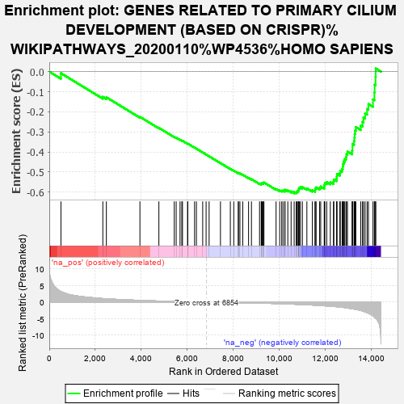
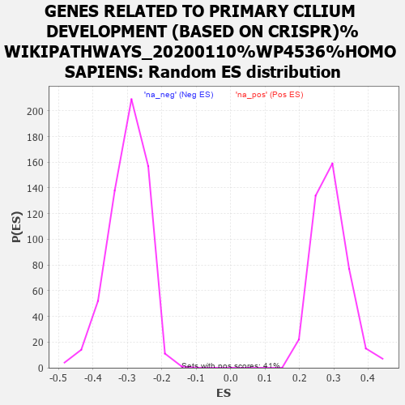

| | | Dataset | MBD2KO_pre.rnk |
| Phenotype | NoPhenotypeAvailable |
| Upregulated in class | na_neg |
| GeneSet | GENES RELATED TO PRIMARY CILIUM DEVELOPMENT (BASED ON CRISPR)%WIKIPATHWAYS_20200110%WP4536%HOMO SAPIENS |
| Enrichment Score (ES) | -0.60584885 |
| Normalized Enrichment Score (NES) | -2.0352037 |
| Nominal p-value | 0.0 |
| FDR q-value | 0.0109331915 |
| FWER p-Value | 0.013 |
Table: GSEA Results Summary

Fig 1: Enrichment plot: GENES RELATED TO PRIMARY CILIUM DEVELOPMENT (BASED ON CRISPR)%WIKIPATHWAYS_20200110%WP4536%HOMO SAPIENS
Profile of the Running ES Score & Positions of GeneSet Members on the Rank Ordered List
| PROBE | GENE SYMBOL | GENE_TITLE | RANK IN GENE LIST | RANK METRIC SCORE | RUNNING ES | CORE ENRICHMENT | | 1 | B9D1 | | | 507 | 3.176 | -0.0077 | No |
| 2 | TUBD1 | | | 2330 | 1.057 | -0.1255 | No |
| 3 | TTC23 | | | 2485 | 0.985 | -0.1277 | No |
| 4 | CEP104 | | | 3945 | 0.505 | -0.2250 | No |
| 5 | TMEM216 | | | 4770 | 0.307 | -0.2798 | No |
| 6 | CDK20 | | | 5439 | 0.194 | -0.3247 | No |
| 7 | IFT122 | | | 5523 | 0.179 | -0.3289 | No |
| 8 | IFT172 | | | 5691 | 0.149 | -0.3392 | No |
| 9 | IFT20 | | | 5768 | 0.135 | -0.3434 | No |
| 10 | TMEM17 | | | 5797 | 0.130 | -0.3442 | No |
| 11 | WDR34 | | | 6020 | 0.101 | -0.3588 | No |
| 12 | RAB23 | | | 6026 | 0.100 | -0.3583 | No |
| 13 | C2CD3 | | | 6323 | 0.059 | -0.3784 | No |
| 14 | OFD1 | | | 6403 | 0.050 | -0.3835 | No |
| 15 | IFT140 | | | 6677 | 0.020 | -0.4023 | No |
| 16 | BBS1 | | | 6825 | 0.004 | -0.4125 | No |
| 17 | TTC8 | | | 6956 | -0.012 | -0.4215 | No |
| 18 | IFT27 | | | 7450 | -0.075 | -0.4552 | No |
| 19 | INPP5E | | | 7880 | -0.131 | -0.4840 | No |
| 20 | KIF3B | | | 8028 | -0.150 | -0.4929 | No |
| 21 | ARL3 | | | 8227 | -0.176 | -0.5052 | No |
| 22 | WDR60 | | | 8231 | -0.177 | -0.5039 | No |
| 23 | BBS12 | | | 8297 | -0.186 | -0.5068 | No |
| 24 | TTC21B | | | 8421 | -0.204 | -0.5136 | No |
| 25 | ARL6 | | | 8673 | -0.246 | -0.5289 | No |
| 26 | DYNLT1 | | | 8799 | -0.268 | -0.5353 | No |
| 27 | CBY1 | | | 9151 | -0.326 | -0.5570 | No |
| 28 | CEP295 | | | 9225 | -0.337 | -0.5591 | No |
| 29 | TCTEX1D2 | | | 9231 | -0.339 | -0.5565 | No |
| 30 | RABL2B | | | 9267 | -0.344 | -0.5560 | No |
| 31 | MKS1 | | | 9310 | -0.351 | -0.5558 | No |
| 32 | TULP3 | | | 9321 | -0.353 | -0.5534 | No |
| 33 | IQCE | | | 9342 | -0.358 | -0.5517 | No |
| 34 | BBS5 | | | 9870 | -0.462 | -0.5844 | No |
| 35 | TCTN3 | | | 10028 | -0.495 | -0.5911 | No |
| 36 | ARL13B | | | 10116 | -0.517 | -0.5926 | No |
| 37 | RABL2A | | | 10175 | -0.531 | -0.5920 | No |
| 38 | CC2D2A | | | 10254 | -0.549 | -0.5927 | No |
| 39 | TUBE1 | | | 10258 | -0.550 | -0.5881 | No |
| 40 | FUZ | | | 10381 | -0.576 | -0.5916 | No |
| 41 | CEP97 | | | 10524 | -0.608 | -0.5962 | No |
| 42 | WDR35 | | | 10658 | -0.651 | -0.5998 | No |
| 43 | TTBK2 | | | 10746 | -0.673 | -0.6000 | Yes |
| 44 | SASS6 | | | 10783 | -0.684 | -0.5965 | Yes |
| 45 | BBS7 | | | 10833 | -0.698 | -0.5938 | Yes |
| 46 | KATNB1 | | | 10839 | -0.700 | -0.5881 | Yes |
| 47 | CEP120 | | | 10857 | -0.704 | -0.5831 | Yes |
| 48 | TXNDC15 | | | 10880 | -0.710 | -0.5785 | Yes |
| 49 | WDPCP | | | 10930 | -0.725 | -0.5756 | Yes |
| 50 | WDR19 | | | 11015 | -0.754 | -0.5749 | Yes |
| 51 | KIAA0753 | | | 11211 | -0.815 | -0.5814 | Yes |
| 52 | CEP44 | | | 11448 | -0.902 | -0.5900 | Yes |
| 53 | FGFR1OP | | | 11569 | -0.948 | -0.5901 | Yes |
| 54 | IFT74 | | | 11571 | -0.948 | -0.5819 | Yes |
| 55 | IFT52 | | | 11614 | -0.961 | -0.5764 | Yes |
| 56 | TCTN2 | | | 11765 | -1.029 | -0.5779 | Yes |
| 57 | ICK | | | 11813 | -1.050 | -0.5720 | Yes |
| 58 | CEP83 | | | 11966 | -1.126 | -0.5728 | Yes |
| 59 | FBF1 | | | 11974 | -1.135 | -0.5634 | Yes |
| 60 | TRAF3IP1 | | | 11995 | -1.144 | -0.5548 | Yes |
| 61 | BBS10 | | | 12075 | -1.185 | -0.5500 | Yes |
| 62 | SCLT1 | | | 12231 | -1.266 | -0.5498 | Yes |
| 63 | TTC26 | | | 12368 | -1.336 | -0.5476 | Yes |
| 64 | TMEM231 | | | 12385 | -1.343 | -0.5370 | Yes |
| 65 | TMEM107 | | | 12504 | -1.406 | -0.5330 | Yes |
| 66 | IFT57 | | | 12513 | -1.412 | -0.5212 | Yes |
| 67 | FOPNL | | | 12520 | -1.418 | -0.5093 | Yes |
| 68 | IFT43 | | | 12646 | -1.510 | -0.5048 | Yes |
| 69 | HSPB11 | | | 12665 | -1.522 | -0.4928 | Yes |
| 70 | TTC30B | | | 12745 | -1.575 | -0.4846 | Yes |
| 71 | KIF3A | | | 12772 | -1.605 | -0.4724 | Yes |
| 72 | LZTFL1 | | | 12785 | -1.611 | -0.4592 | Yes |
| 73 | BBS9 | | | 12813 | -1.630 | -0.4469 | Yes |
| 74 | CEP19 | | | 12859 | -1.680 | -0.4353 | Yes |
| 75 | TRAPPC11 | | | 12915 | -1.729 | -0.4241 | Yes |
| 76 | IFT46 | | | 12936 | -1.750 | -0.4102 | Yes |
| 77 | BBS2 | | | 12977 | -1.785 | -0.3975 | Yes |
| 78 | DYNLL1 | | | 13181 | -2.016 | -0.3940 | Yes |
| 79 | CEP162 | | | 13193 | -2.026 | -0.3771 | Yes |
| 80 | EFCAB7 | | | 13194 | -2.028 | -0.3595 | Yes |
| 81 | KIFAP3 | | | 13264 | -2.106 | -0.3459 | Yes |
| 82 | PIBF1 | | | 13279 | -2.127 | -0.3283 | Yes |
| 83 | MKKS | | | 13292 | -2.149 | -0.3104 | Yes |
| 84 | IFT88 | | | 13312 | -2.172 | -0.2928 | Yes |
| 85 | DYNC2H1 | | | 13342 | -2.203 | -0.2756 | Yes |
| 86 | IFT80 | | | 13556 | -2.522 | -0.2685 | Yes |
| 87 | CEP76 | | | 13632 | -2.679 | -0.2504 | Yes |
| 88 | IFT81 | | | 13675 | -2.765 | -0.2292 | Yes |
| 89 | RPGRIP1L | | | 13745 | -2.965 | -0.2081 | Yes |
| 90 | BBS4 | | | 13832 | -3.199 | -0.1862 | Yes |
| 91 | CLUAP1 | | | 13890 | -3.352 | -0.1610 | Yes |
| 92 | DYNC2LI1 | | | 14089 | -4.175 | -0.1384 | Yes |
| 93 | TMEM67 | | | 14149 | -4.457 | -0.1036 | Yes |
| 94 | MIB1 | | | 14161 | -4.522 | -0.0650 | Yes |
| 95 | TCTN1 | | | 14201 | -4.793 | -0.0259 | Yes |
| 96 | CEP192 | | | 14207 | -4.834 | 0.0159 | Yes |
Table: GSEA details [plain text format]

Fig 2: GENES RELATED TO PRIMARY CILIUM DEVELOPMENT (BASED ON CRISPR)%WIKIPATHWAYS_20200110%WP4536%HOMO SAPIENS: Random ES distribution
Gene set null distribution of ES for GENES RELATED TO PRIMARY CILIUM DEVELOPMENT (BASED ON CRISPR)%WIKIPATHWAYS_20200110%WP4536%HOMO SAPIENS